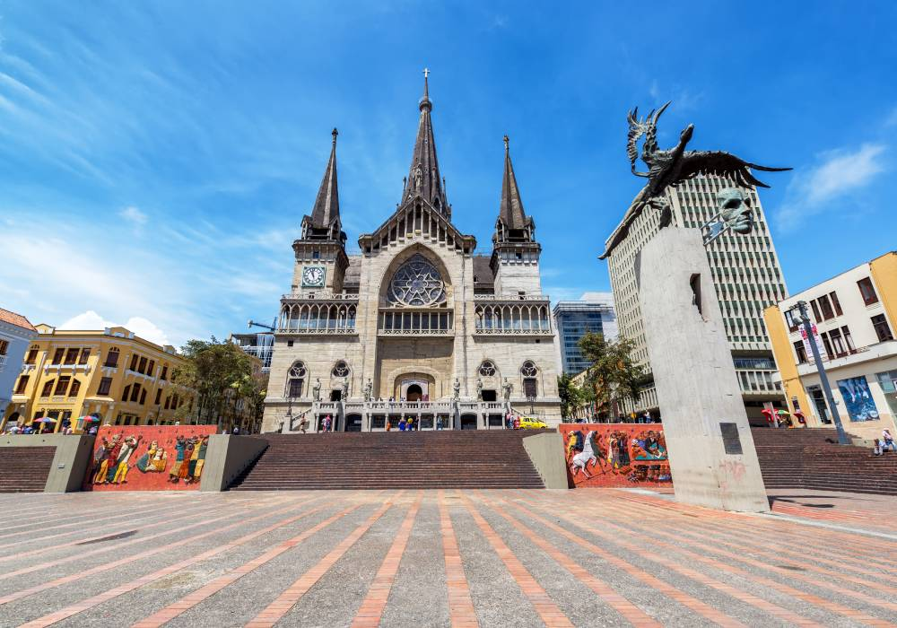
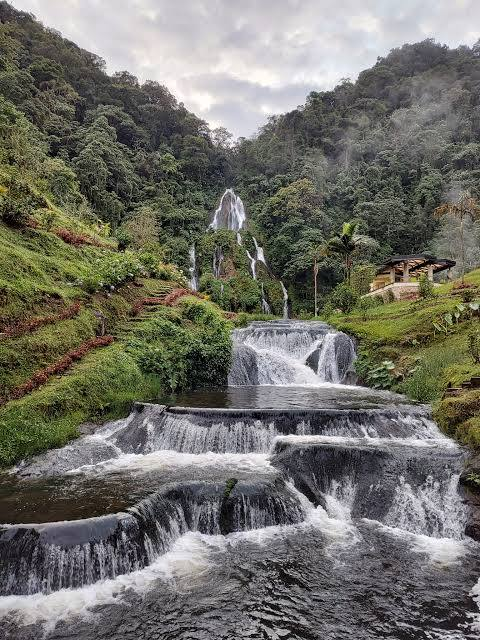
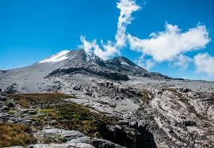
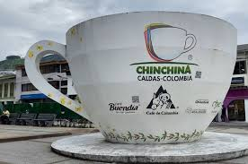

Caldas, Colombia
Descripción
Caldas, ubicado en el corazón del Eje Cafetero de Colombia, es un departamento que destaca por su riqueza natural, cultural e histórica, siendo declarado Patrimonio Cultural de la Humanidad por la UNESCO gracias a su Paisaje Cultural Cafetero. Situado en la región andina, a una altitud que oscila entre los 1.000 y los 5.321 metros sobre el nivel del mar, este territorio ofrece una diversidad geográfica que incluye volcanes como el Nevado del Ruiz, valles fértiles ideales para el cultivo del café, y ríos que alimentan cascadas impresionantes como las de Santa Rosa de Cabal. Su capital, Manizales, es conocida por su arquitectura colonial y su resiliencia tras múltiples terremotos, mientras que municipios como Chinchiná se erigen como centros de la tradición cafetera. La población, cercana a los 1 millón de habitantes, vive de una economía dinámica liderada por la producción de café, que representa una parte significativa de las exportaciones nacionales, complementada por el turismo, el comercio y la agroindustria. La cultura caldense se refleja en su gastronomía paisa, con platos abundantes como la bandeja paisa, y en festividades que celebran la música, el baile y las tradiciones campesinas. Además, la región enfrenta desafíos como la desigualdad rural y la informalidad laboral, pero sigue siendo un ejemplo de desarrollo sostenible y preservación ambiental, atrayendo a visitantes que buscan conectar con la naturaleza y la herencia cultural de Colombia.
Sitios Turísticos
Caldas, ubicado en el corazón del Eje Cafetero y declarado Patrimonio Cultural de la Humanidad por la UNESCO, es un destino que combina la riqueza natural con la historia y la cultura. Sus paisajes montañosos, aguas termales y tradiciones cafeteras atraen a visitantes de todo el mundo. A continuación, te presentamos una selección de los sitios turísticos más destacados, acompañados de imágenes que reflejan su belleza:
- Catedral Basílica de Manizales: Este imponente edificio gótico, ubicado en el centro de Manizales, es uno de los símbolos más reconocibles de Caldas. Construida tras el terremoto de 1926, su arquitectura destaca por sus dos torres de 112 metros y una cúpula central que ofrece vistas espectaculares de la ciudad. Es un lugar de culto y un punto de interés histórico que refleja la resiliencia de la región.

- Cascadas de Santa Rosa de Cabal: Situadas a pocos kilómetros de Santa Rosa de Cabal, estas cascadas son un paraíso natural rodeado de exuberante vegetación. Con múltiples niveles de agua que caen en piscinas naturales, son ideales para relajarse, disfrutar de caminatas y conectar con la naturaleza. Los visitantes pueden disfrutar de aguas termales cercanas que enriquecen la experiencia.

- Nevado del Ruiz: Este volcán activo, parte del Parque Nacional Natural Los Nevados, es un espectáculo geológico con picos nevados que contrastan con los paisajes verdes circundantes. A 5.321 metros sobre el nivel del mar, ofrece rutas de trekking, oportunidades para avistamiento de fauna y vistas únicas, aunque requiere precaución por su actividad volcánica monitoreada.

- Recinto del Pensamiento: Un parque ecológico en las afueras de Manizales, este lugar es un santuario de biodiversidad con un mariposario, jardines temáticos y senderos que recorren la selva. Es perfecto para aprender sobre la flora y fauna local, participar en actividades educativas y disfrutar de un ambiente sereno rodeado de naturaleza.

- Chinchiná: Este encantador municipio es conocido como la "capital cafetera" de Caldas, famoso por sus fincas de café que forman parte del Paisaje Cultural Cafetero. Los visitantes pueden recorrer plantaciones, aprender sobre el proceso de producción del café y disfrutar de un ambiente rural con arquitectura colonial. Además, ofrece rutas ecológicas y festivales culturales que celebran la tradición cafetera.

Comida Típica
La gastronomía de Caldas está profundamente influenciada por la tradición paisa, caracterizada por platos abundantes y sabores robustos que reflejan la cultura cafetera y campesina de la región. Esta cocina utiliza ingredientes frescos de la tierra y combina técnicas heredadas de generaciones. A continuación, te presentamos una lista ordenada de los platos más representativos, con detalles sobre su preparación y acompañamientos:
- Bandeja Paisa
- Descripción: Un plato emblemático de la región que ofrece una experiencia gastronómica completa, con una variedad de carnes, frijoles cocinados lentamente y acompañamientos tradicionales. Es un reflejo de la abundancia y la hospitalidad paisa, servido con orgullo en hogares y restaurantes locales, especialmente durante celebraciones familiares.
- Ingredientes Principales: Frijoles, arroz, carne molida, chicharrón, chorizo, aguacate, plátano maduro frito, huevo frito, arepa.
- Sancocho de Gallina
- Descripción: Esta sopa reconfortante es un clásico de la cocina caldense, elaborada con gallina de corral y una mezcla de tubérculos que le dan un sabor profundo. Es un plato ideal para compartir en familia, especialmente en días fríos, y se sirve con arroz blanco al lado, acompañado a menudo de una conversación cálida alrededor de la mesa.
- Ingredientes Principales: Gallina, yuca, plátano verde, papa criolla, cilantro fresco, mazorca de maíz.
- Mondongo
- Descripción: Una sopa espesa y nutritiva hecha con callos de res, cocinada durante horas con vegetales y especias. Es un plato tradicional que se disfruta en reuniones sociales y tiene raíces en la cocina campesina de la región andina, siendo un favorito en festividades locales.
- Ingredientes Principales: Callos de res, papa, zanahoria, cebolla, ajo, cilantro, comino.
- Arepa de Chócolo
- Descripción: Una arepa dulce y suave preparada con maíz tierno, a menudo acompañada de queso fresco o mantequilla. Es un desayuno o merienda popular que resalta la simplicidad y el sabor natural de los ingredientes locales, siendo un acompañante perfecto para el café caldense.
- Ingredientes Principales: Maíz tierno, azúcar opcional, queso fresco, mantequilla.
- Calentado Paisa
- Descripción: Un plato creativo que utiliza sobras del día anterior, recalentando frijoles, arroz y carnes con plátano y huevo. Es una solución práctica y deliciosa, muy común en los hogares caldenses para aprovechar los alimentos, y se disfruta especialmente en desayunos informales.
- Ingredientes Principales: Frijoles, arroz, carne asada o frita, plátano maduro, huevo.